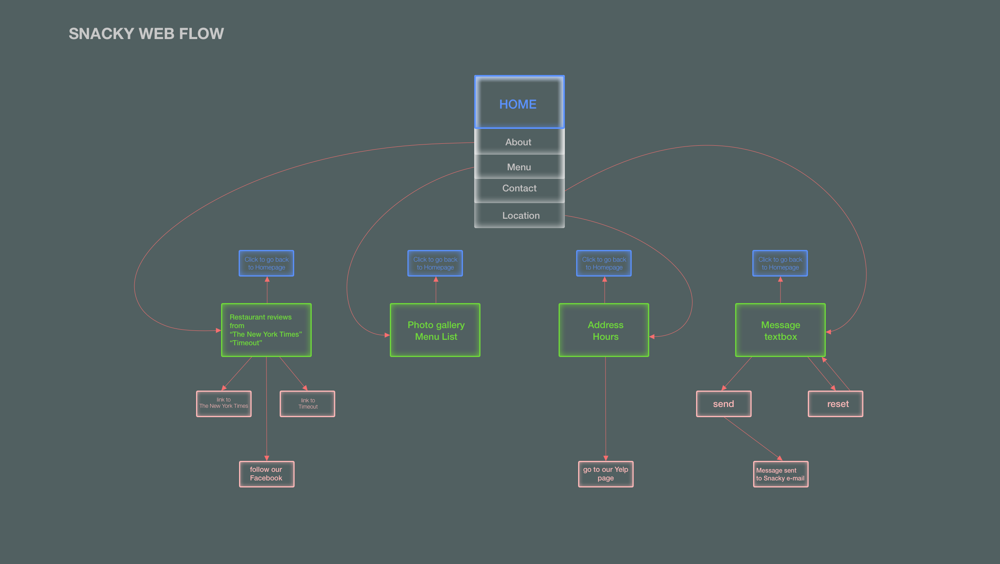
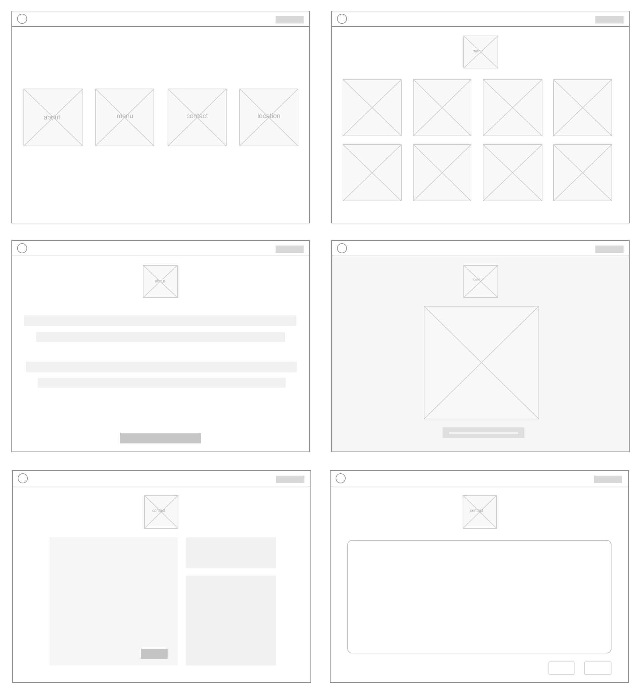
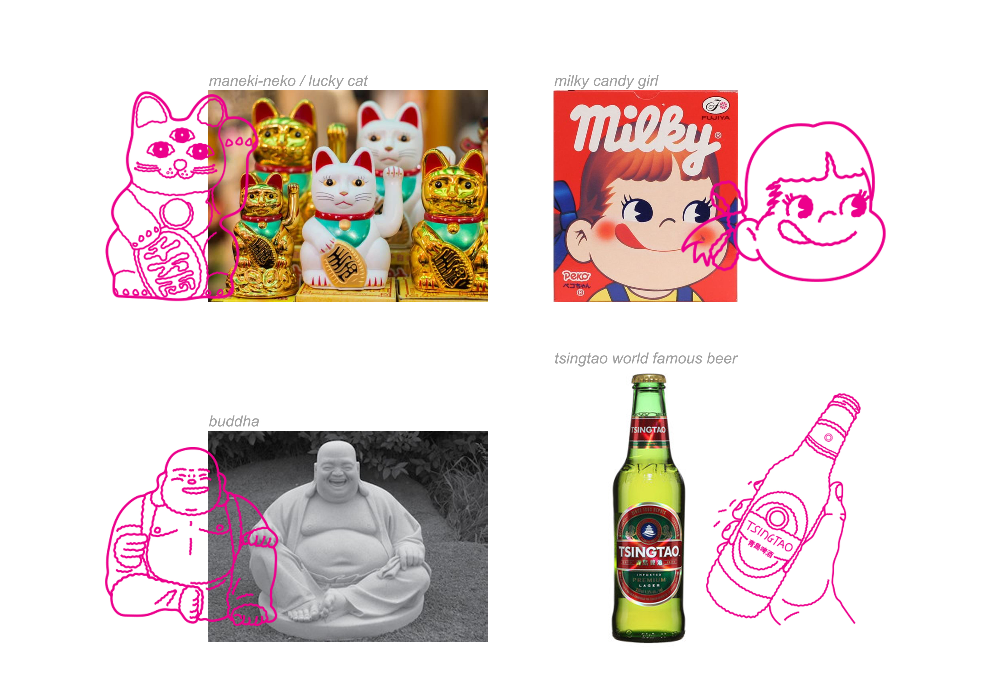
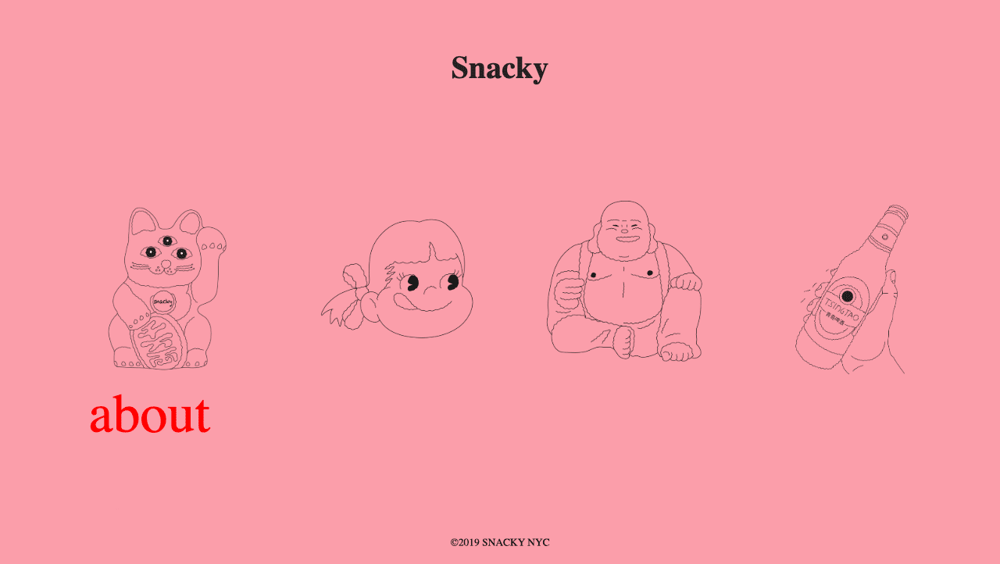
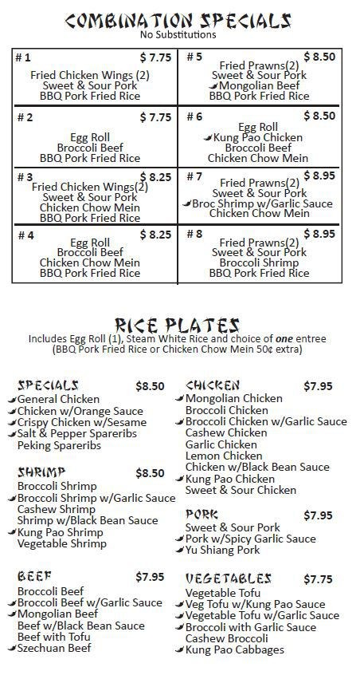
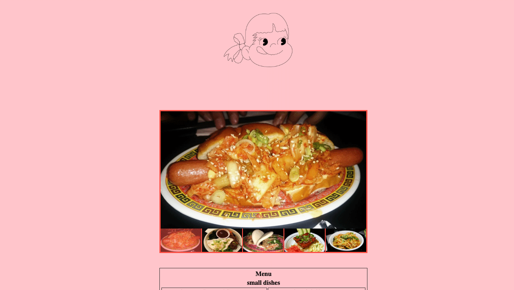
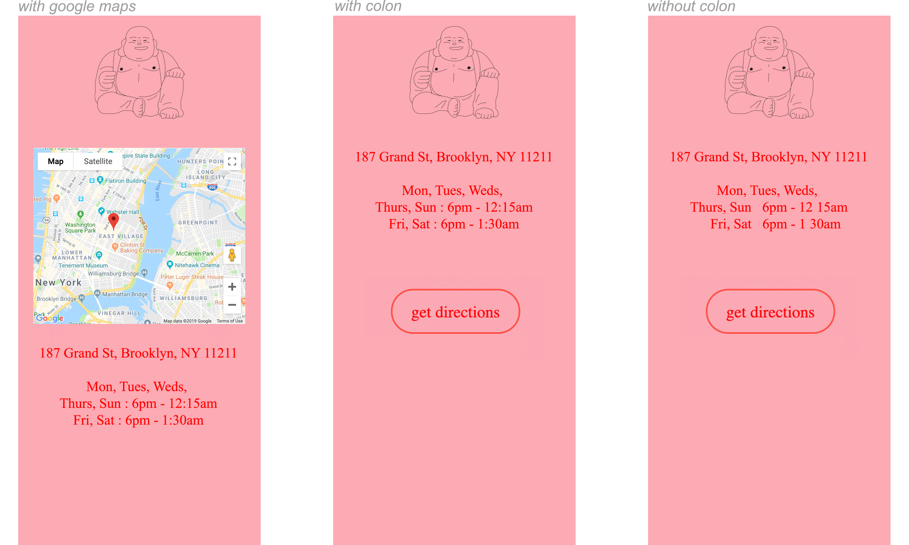
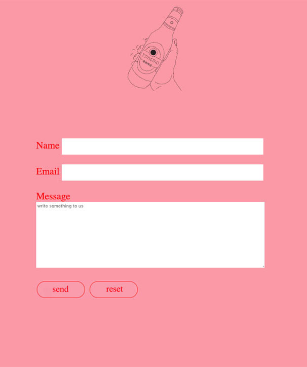
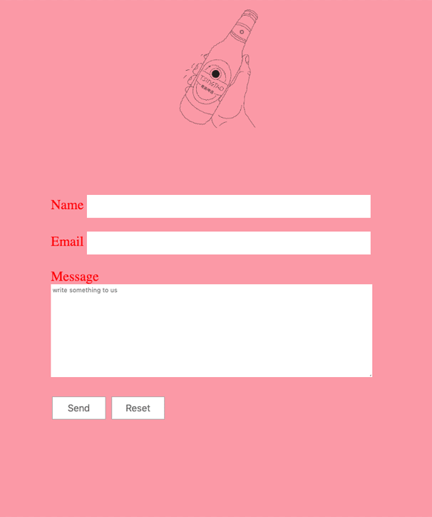

Tools used : Webflow | HTML & CSS | Adobe Photoshop | Adobe Illustrator
Snacky is a hip pan Asian restaurant located in Brooklyn NY. It is located on one of the busiest streets in Williamsburg, yet its exterior is unassuming, making it easy to miss. Not only is the restaurant's location discreet, but it also did not possess a website. My objective was to create a responsive website and mobile app that would easily attract new customers and establish Snacky's credibility on the web.
I began my process by setting out to understand the restaurant and its clientele. I ate at Snacky many times throughout the weeks and in turn got very familiar with the atmosphere and their customers. Every evening Snacky serves up small savory dishes within a room drenched with collectible Asian trinkets. Red walls, dim the lights, and suddenly a wave of nostalgia blankets the room as one is transported into a scenery that evokes a time of the past. Reminiscent of a small shop in vintage Hong Kong, a relaxed 80s Tokyo arcade, or simply the bedroom of an eccentric indie kid. Throw all these ingredients in a bowl and set to bake, you've got Snacky.
I sought out to create a straight forward easy user flow. Snacky has a discreet vibe. Overwhelming the page with information was not aligned with that. Quick wireframes were sketched based off of the web flow chart.
 I set out to work on colours and mood in Sketch. Being that Snacky's interior is painted a classic China red, I was originally set to implement red as a focal colour. However, myself and a focus group decided that having a red background was too aggressive. Its boldness was not inviting enough to persuade a visitor to interact with the site for long. Drawing from the upbringing of the owner's Asian-American experience, I reflected on my own memories and was reminded of the dusty pink boxes used in all of the Chinese bakeries growing up. In China, a gift wrapped in red is a way of saying "I wish you good fortune." However, in ancient China dyes were expensive and papers usually only went through a single soak, resulting in a diluted red or dusty pink colour. Dusty pink evokes strong memories within the Asian American experience, while on the other hand the colour pink itself evokes a cool and casual air. I chose to have a shade of pink fade in and out to further usher in a nostalgic and dreamy state.
I sketched the images based on items I saw in the restaurant. I chose characters / items that were iconic enough to be recognizable or at least somewhat discernable to the widest percentage of people. The images serve as icons that allow one to explore different pages as well as guide the user back to back to home page.
The text was orginally static on hover, but was changed to an up and down movement. This jumping movement creates a more excitable interaction. The large text is playful and easy to read. I found a way to incorporate Snacky's interior red walls in the font. Red is more subtle and capturing when used in text. The colur proves too heavy when used as a background.
For the menu page, I turned to using a simple image gallery accompanied with a menu list reminiscent to that of Asian take out menus. Old fashion take out menus are easy to read. Their old school vibe holds an eccentric yet down home feel.
 The location page initially contained a google map. However the sharpness of the map's white block broke the page's oldtime veil. It was later changed to a simple link that helps escort one to an external page straight to Snacky's yelp site. The colon used in representation with the time was left out. Removing the colons gave the page a cleaner appeal.
The contact page is kept especially clean and simple. The oldtime feel is there with the sharp and undecorated input boxes. The text inside the input boxes is kept small in effort to encourage the sense of an antiquated format. Rounded pill shapes were initially used to contain the send and reset buttons. However, the modern shapes gave the page too fashionable a feel, and general undecorated boxes were used instead.
 My mindset going into this project was to create a digital space akin to that of Snacky's storefront. My first prototypes were too literal and failed to emit the same unassuming air that Snacky easily possessed. The mood of the website quickly turned in the right direction once I began reflecting on memories I had dining at Snacky. Overall I am very happy with the outcome, the site is clean and funky! It offers enough mystery for a visitor to want to interact with the site and in turn eventually make a visit.